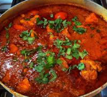

Chicken Pathia

Description
A pathia is a moderately hot curry that embodies the battle between
sweet and sour to bring you a crowd pleasing
dish.
Ingredients
- 1kg - Chicken thighs, boneless skinless thighs or breast.
- 400g - Onions (Blended smooth)
- 60g - Red pepper
- 3 Tbsp - Garlic & ginger paste
- 2 Tbsp - Mild madras curry powder
- 1 Tbsp - Garam masala
- 1 Tsp - Turmeric
- 1/2 Tbsp - Tandoori masala powder
- 1 - star anise
- 1 Tsp - Salt (to taste)
- 1 Thumb size piece - Cassia bark or cinnamon stick
- 2 1/2 Tbsp - Mango chutney
- 1 Tbsp - Tamarind sauce
- 6 Tbsp - Tomato puree
- 2 Tsp - Hot chilli powder
- 2 Tsp - Red kashmiri chilli powder
- 1 Tsp - Kasoori methi
- 500ml - Boiling water
- (Coriander to garnish)
Method
- Heat the oil on a medium heat.
- Add the star anise and cassia bark - Stir for 30 to 45 secs.
- Pour in the onion & cook out for approx 10 mins
- In goes the garlic and ginger paste and the spices (constantly stirring for 45 to 60 secs)
- The tomato paste goes in now, mix well
- Now add the chicken, coat thoroughly with the paste
- Add the bell pepper, mango chutney, tamarind sauce, & salt - Stir well then put the lid on for 10 minutes
- After 10 minutes sprinkle in the methi & put the lid on for another 10 minutes on a LOW heat to finish cooking the chicken
- Serve with the rice or bread of your choice
- Enjoy